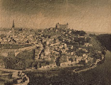

|
|
|

|
|
人々にとって影とは不思議なものである。それは光のあるところには必ず存在する。人の影は常に人と共にあり、ときに大きく、ときに小さくあるいは濃淡の度合いを変化させながら、まぎれもなく、人のものとして付き従ってくる。人がこの世に生まれるやいなや、人の影は存在し始め、人と共に成長していき、死とともに消滅する。
私はこの影に大変興味を引かれ、ミステリアスを感じる。影は人それぞれの心理により違ってくる。そこには、意識の心理、無意識の心理が強く入り込んでくる。そこには、意識の心理、無意識の心理が強く入り込んでくる。影には入り込める奥の深い、広い空間がある。宇宙に匹敵する広さがある。海の深さに匹敵する深さがある。−イマジネーションであるー
モノクロームの影には限りがない。いろいろなイマジネーションが広がる。光の当たっている部分は比較的すぐに濃さが決まるが、影の部分はなかなかきまらない。どんな影の濃さにするか、何時も迷いそこにイマジネーションが生まれ、作品のイメージが広がる。
独自の重量感溢れる印画紙を創作した。凹凸の表面に焼け付ける技を確立し、今日に至るのに１０数年を要した。季節による、天候、温度、湿度に左右され、暑い夏や寒さの厳しい冬には思うような画像が浮き出てこない。和紙、各々違った濃さで染色し、各々違った濃さで絵を描くように、部分的に濃く部分的に薄く、乳剤を塗り、印画紙を創る。写真であっても同じ作品が出来ず、気に入った作品が出来るのは５，６回のに１点の割合である。一枚仕上げるのに約一ヶ月を費やし、一年に出来るのは数点である。
厚い和紙にこだわるのも、影の濃さにある、滲みにある。紙が厚いのでなかなか思う様な黒には成らない。どんどん中にしみ込んでいき、どんどん周りに染み出していく。思うような絵には成らない。思う様にならないところが、とても好きだ。
気に入った作品が出来れば、それ以上同じネガを使って焼き付けない。写真であっても同じ作品は創らない。レンズという目を通しての"絵画"−写真画—である。
寺院をよくモチーフにするのも、宇宙の静けさ、広がり、奥深さを感じ安らぎを与えてくれるからだ。
光と影の世界。静寂と温もりを感じる世界。心の中で何か輝く瞬間。それを感じシャッターを切る。そして感謝の心を込めて、静かな祈りを捧げる。
"和と洋の融合"この作品を観て、おのれの心の神を感じ、心の安らぎになれば、と願って創作している。
|
|